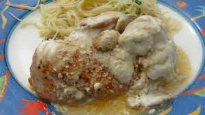

Chicken Excelsior House

Chicken Excelsior House is an old English recipe of chicken that has been cooked in butter and garlic, and then topped with a creamy sauce with a sour cream-Cheri base that slightly hardens atop it. It procides a savory, umami flavor that perfectly accompanies pasta or can be served over rice.
The dish is not difficult to make, and takes little prep time. It is an easy dish to throw together and still get fantastic and beautiful results.
Ingredients
- 2 chicken breasts
- 1/2 cup butter
- 1 tbls garlic - minced
- 1/2 tsp paprika
- 1/4 lemon juice
- 1 cup sour cream
- 1/4 cup cooking Cheri
- dash of red pepper
- salt to preference
Preparation
- Preheat oven to 375 degrees
- Prepare raw chicken by cutting into 2-inch chunks and set aside
- Melt butter in corningware dish, then add paprika, lemon, salt, and garlic to butter
- Add chicken to dish, making sure pieces are well coated
- Place chicken in the oven for 40 minutes
- While chicken is cooking, prepare sauce by mixing sour cream, cheri, and red pepper. Set aside
- When chicken is done cooking, pour sauce over chicken
- Let cool 10 minutes, then plate and serve with pasta or rice